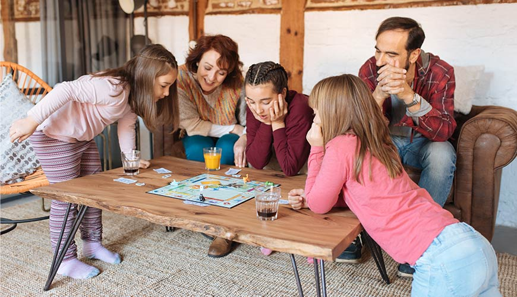
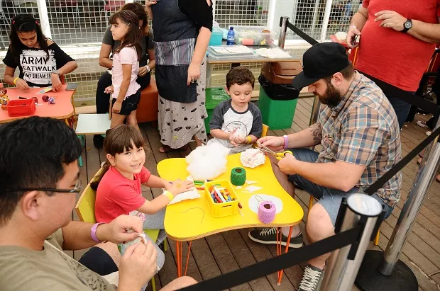

1. Noite de filmes/séries: Reserve uma noite para ver um filme com a família e comer besteiras.
Exemplos:
Faça uma cabana de lençol na sala; Compre salgadinhos, doces, etc.; Escolhe um filme de comédia.

2. Jogos de tabuleiro/cartas: Escolha jogos de tabuleiro ou cartas que sejam faceis e divertidos, para que todos de qualquer idade poder jogar.
Exemplos:
Uno; Mímica; Quem sou eu; Banco imobiliário Júnior
3. Cozinhar juntos: Escolher uma receita fácil e deliciosa para fazer com a família.
Exemplos:
Bolo de chocolate; Strogonoff; Panquecas doces/salgadas.
4. Oficinas de arte: Faça artes com massinha, tinta, coisas relacionadas a arte.
Exemplos:
Escolha personagens e tente fazer pintura deles; Faça competição de massinhas.
